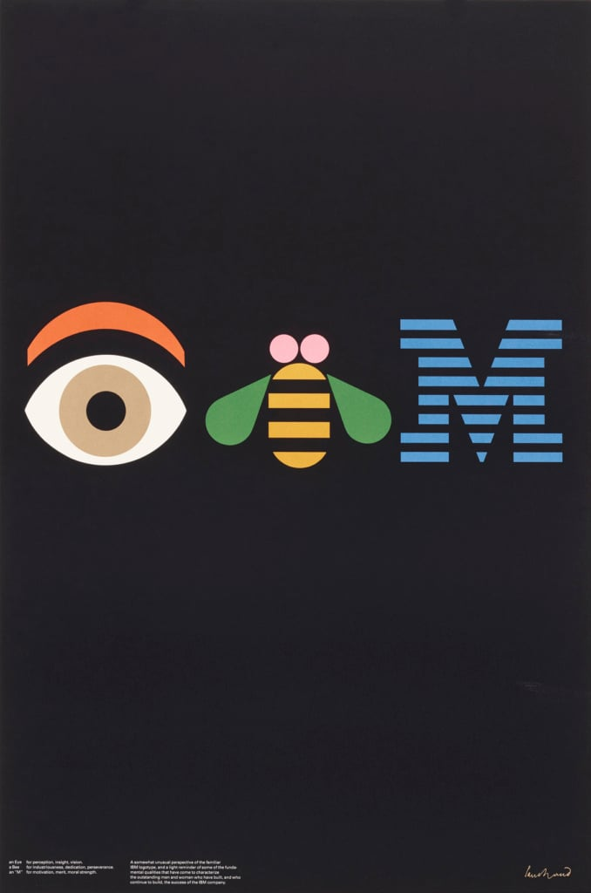

Paul Rand
Legendary Graphic Designer: August 15, 1915-November 26, 1996
Paul Rand was an American art director and graphic designer. He was best known for his corporate logo designs, including the logos for IBM, UPS, Enron, Morningstar, Inc., Westinghouse, ABC, and NeXT. He developed an American Modernistic style from European influences and was one of the first American commercial artists to embrace and practice the Swiss Style of graphic design.
Rand excelled at:
- Corporate Logos
- Children's Books
- Advertising
Visual Samples of his work:
Part 1 of an interview with Paul Rand in 1991 (click image)